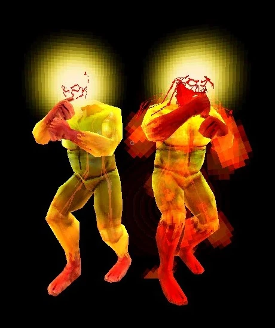

Appearance
Sisyphus Prime is a muscular, luminescent humanoid with a golden translucent body that showcases his circulatory system, much like Minos Prime. His head resembles a sun-like ball of light with his face only visible as a red outline. His hands and feet are coated in blood, reminiscent of his followers. Upon entering his second phase, Sisyphus gains a fiery red aura, with more blood covering his limbs, as well as long hair and a full beard, symbolizing the stress and transformation of his form under combat.

Combat and Behavior
Sisyphus Prime is an incredibly formidable opponent, with the ability to chain devastating attacks capable of killing V1 in seconds. His stamina system governs the flow of his combat style. If his stamina runs out, he enters a brief recovery period where he cannot attack. Parrying his attacks restores 5 stamina to him, allowing him to become even more aggressive as the fight progresses.
He enters Phase 2 after depleting his first health bar, significantly increasing the speed and aggression of his attacks. In this phase, parrying no longer interrupts his shockwaves, and his stamina usage becomes more erratic, especially on higher difficulties.
Attack Patterns
Phase 1
- "You can't escape!" – A combo attack where Sisyphus teleports three times, performing a punch, knee strike, flying kick, and stomp. The stomp generates a shockwave.
- "Destroy!" – A teleporting uppercut followed by a summoned glint that explodes and tracks V1's movement.
- "This will hurt." – A large explosive attack that has a lengthy charge-up but deals significant damage when it lands.
- "BE GONE!" – A vertical shockwave generated by Sisyphus slamming his palms together. Can be avoided by moving out of range or parrying.
- Roundhouse Kick – A spinning kick that sends V1 flying. Parryable.
- Overhead Chop – A knife-hand strike that tracks V1's movements perfectly.
- Ground Slam – A slam attack that creates a shockwave on impact.
Phase 2
Phase 2 begins after Sisyphus Prime’s health falls below 65%. He becomes faster, more aggressive, and his attacks change to reflect his heightened state. Key differences include:
- All attacks are executed more quickly with reduced recovery time.
- Shockwaves from attacks like "BE GONE!" and "You can’t escape!" cannot be interrupted by parrying.
- Increased stamina consumption and faster recovery times, especially on higher difficulty settings.
Difficulty Adjustments
Sisyphus Prime's behavior and stamina regeneration change depending on the difficulty level:
- HARMLESS/LENIENT: Sisyphus Prime’s attacks are slower, and shockwaves from attacks are smaller and easier to avoid. There is no shockwave from "You can't escape!" or "BE GONE!".
- STANDARD: Sisyphus Prime’s attacks become faster and more dangerous. Parrying "You can't escape!" and "BE GONE!" becomes much harder.
- VIOLENT: Shockwaves are much larger, and Sisyphus becomes even more aggressive. Attacks deal more damage and occur at a faster pace.
- BRUTAL: Sisyphus has infinite stamina in Phase 2 and performs attacks with no recovery time. He no longer taunts the player, and his attacks are significantly faster.
Strategies for Defeating Sisyphus Prime
To defeat Sisyphus Prime, you’ll need sharp reaction times and mastery of parrying, as his relentless aggression is difficult to avoid. Key strategies include:
- Learn to read his telegraphs: Pay close attention to his exaggerated windup animations and sound cues to distinguish between parryable and unparryable attacks.
- Manage your stamina: Conserve stamina for moments of danger, like when you’re airborne or facing a difficult combo, and use it wisely during moments of recovery.
- Use mobility to your advantage: Dashing and sliding allow you to avoid his combos and counterattack more effectively. Avoid staying in one place for too long, as his attacks can overwhelm you.
- Parry his attacks: Parrying is key to staying alive and dealing significant damage. Be mindful of the stamina you provide to Sisyphus when you parry, as it can extend his attack phase.
- Aggressive playstyle: Use fast, close-range weapons like the Whiplash and Jackhammer to keep up the pressure, and make use of explosive weapons like the Rocket Launcher when in the air.